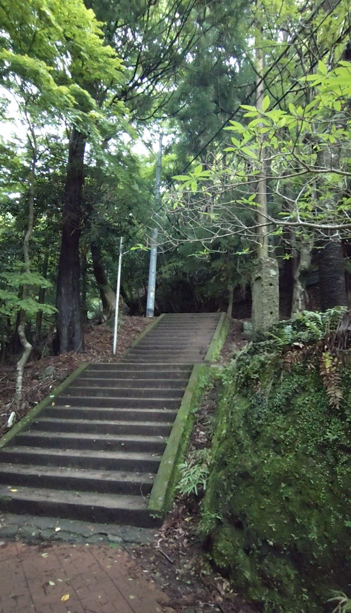
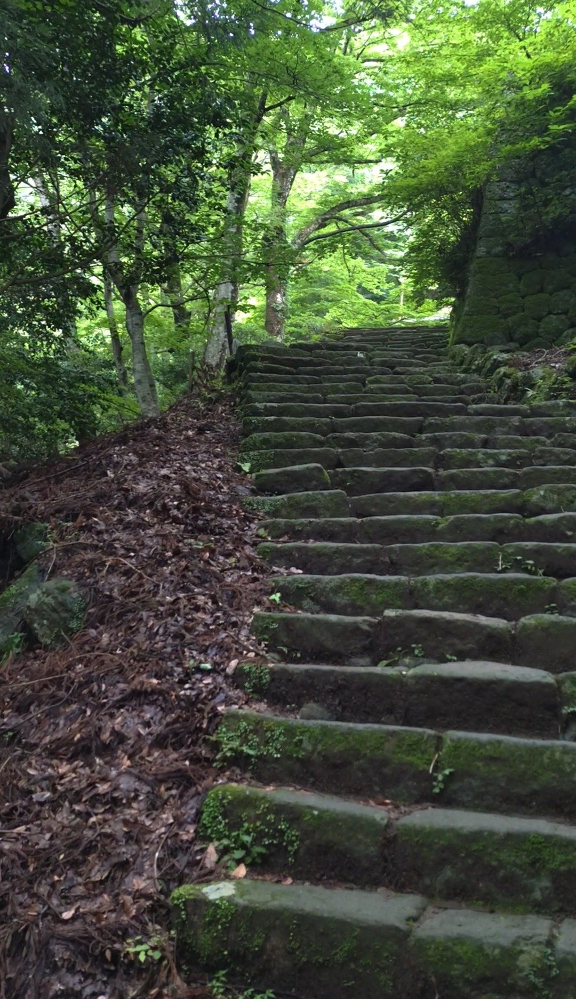
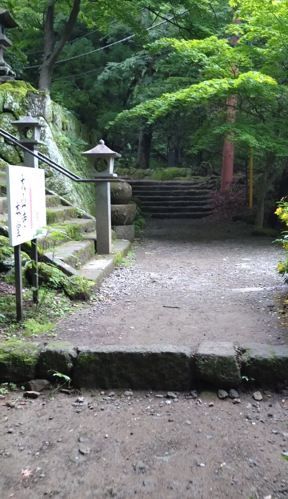
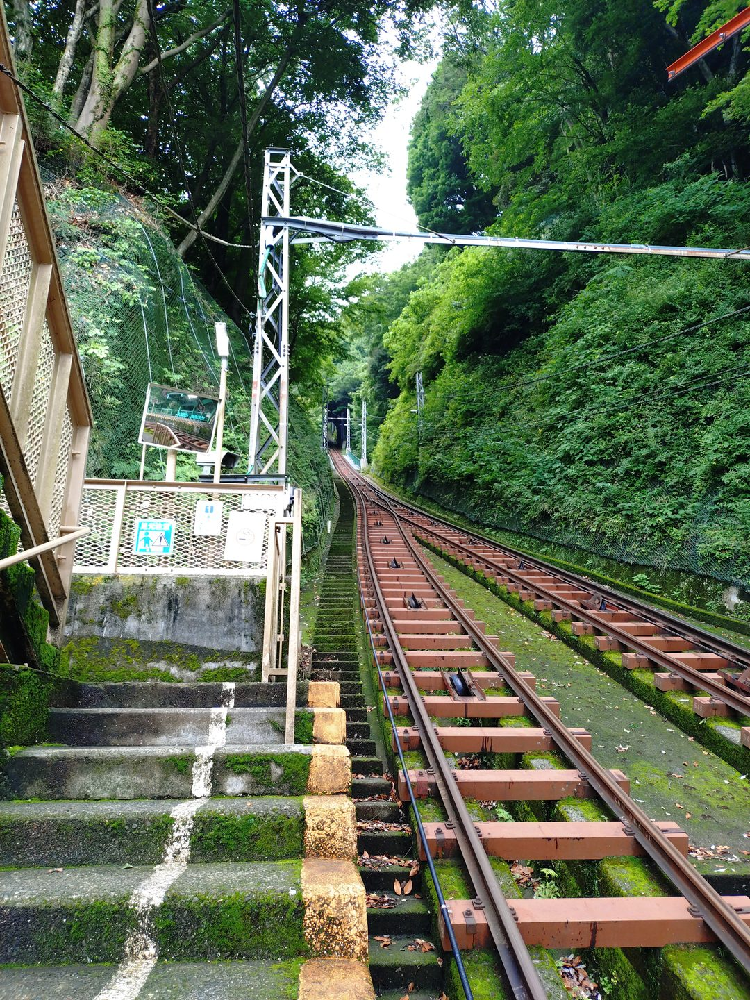
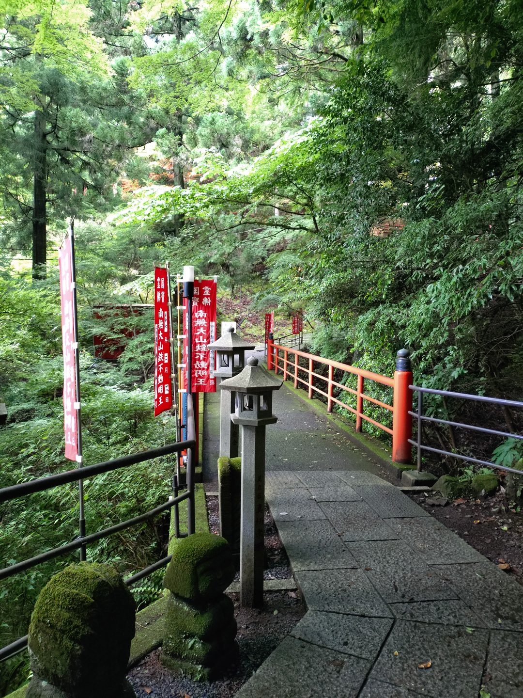
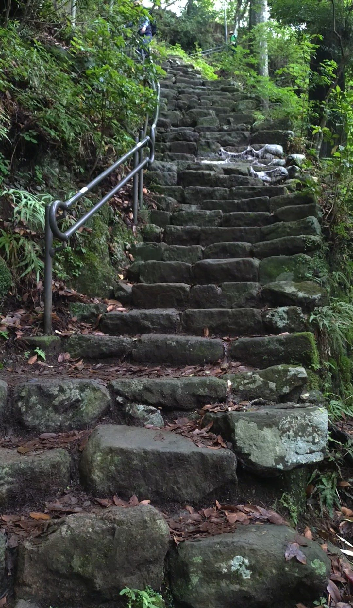
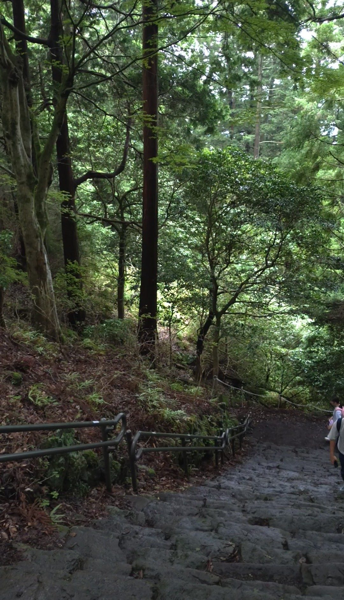

こま参道を登り切った先から、大山阿夫利神社の下社へと向かいます。男坂と女坂の2ルートがあり、今回は女坂を選びました。神奈川中央交通バスのバス停「大山ケーブル」からこま参道を歩いて約20分。男坂と比べると急な石段は少なく、平地や神社、ケーブルカーの駅なども途中に点在していて、ピクニック感覚で楽しめるコースです。ただし終盤には急な石段が待っています。油断は禁物です。
神奈川中央交通バス「大山ケーブル」バス停下車、こま参道を経由して徒歩約20分。こま参道の終点から男坂・女坂の分岐があります。女坂は男坂より緩やかですが、終盤は急勾配になるため、グリップのある靴で臨んでください。
全体的には男坂より歩きやすいルートですが、終盤の石段は急でかつ濡れると非常に滑りやすくなります。グリップのある靴、水分補給は必須。雨上がりや雨天時は特に慎重に。トレッキングポールがあると安心です。
男坂のスタートと比べると、女坂の入口は明らかに穏やかな印象です。石段の勾配が緩やかで、一段一段の高さも抑えられています。「これなら登れる」という安心感が序盤から湧いてくるのが女坂の良さです。

緩やかな石段が続く中、周囲の自然の豊かさが目に入ります。曇り空でも木々の緑が鮮やかで、空気が澄んでいて清々しい。急登続きの男坂とは対照的に、景色を楽しむ余裕があります。

途中、石段が途切れて平地になる区間があります。息を整えながら歩けるこのタイミングが心地よいです。足元の変化がコースにリズムを生んでいて、「また石段か」と単調に感じさせません。

しばらく進むとケーブルカーの駅が見えてきます。ケーブルカーを使えばここから上へ楽に行けますが、今回は歩いて登り続けます。ケーブルカー駅の存在がコースのランドマークになっていて、「ここまで来た」という目安になります。

さらに進むと、コース沿いに小さな神社が現れます。こうした立ち寄りスポットがあることで、単なる登山道ではなく、参道を巡る体験になっています。飽きさせない工夫が随所にある、よく整備されたコースだと感じます。

しかし終盤、コースの表情が一変します。石段が急になり、前日の雨で石が水で滴っていたりぬかるんでいたりと、足元への集中力が一気に必要になります。序盤の穏やかさにすっかり油断していたところへのこの急登は、なかなか手強かったです。

登り切って後ろを振り返ります。終盤はかなり息が切れましたが、清々しい疲れです。緩やかな序盤から変化に富んだ中盤、そして急登の終盤まで、女坂は歩いていて飽きないコースでした。男坂よりも体力的な敷居が低いぶん、大山登山の入門としておすすめできます。ただし終盤の急登と雨での滑りには、十分気をつけてください。
